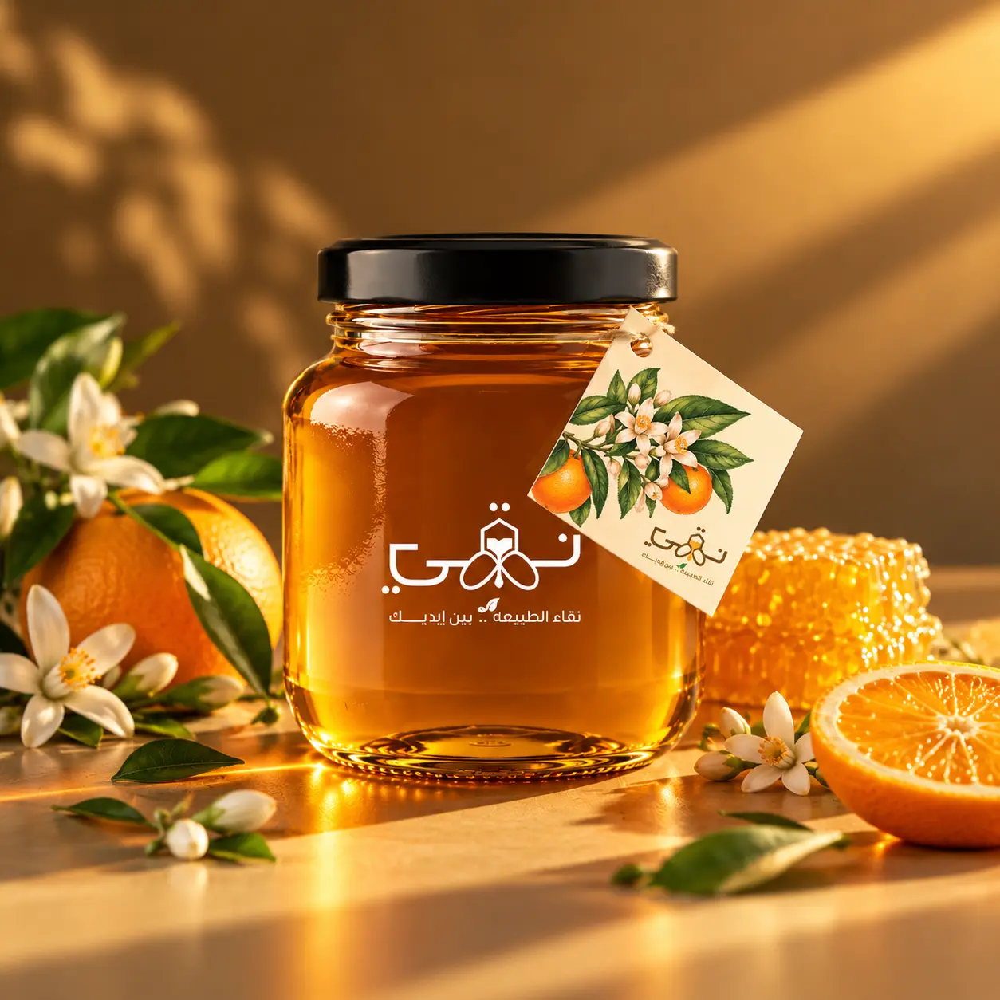
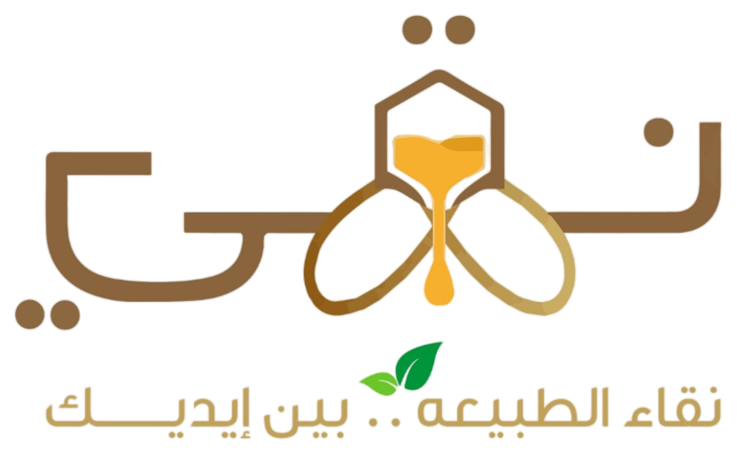

من المنحل إلى برطمانك
اطمئن بنفسك
على تشغيلة عسلك
ابدأ بكتابة رقم التشغيلة الموجود على العبوة، وستظهر لك اقتراحات. ويمكنك اختيار النوع مباشرة.
أو اختر التشغيلة


رحلة العسل، بكل وضوحابدأ بكتابة رقم التشغيلة الموجود على العبوة، وستظهر لك اقتراحات. ويمكنك اختيار النوع مباشرة.
